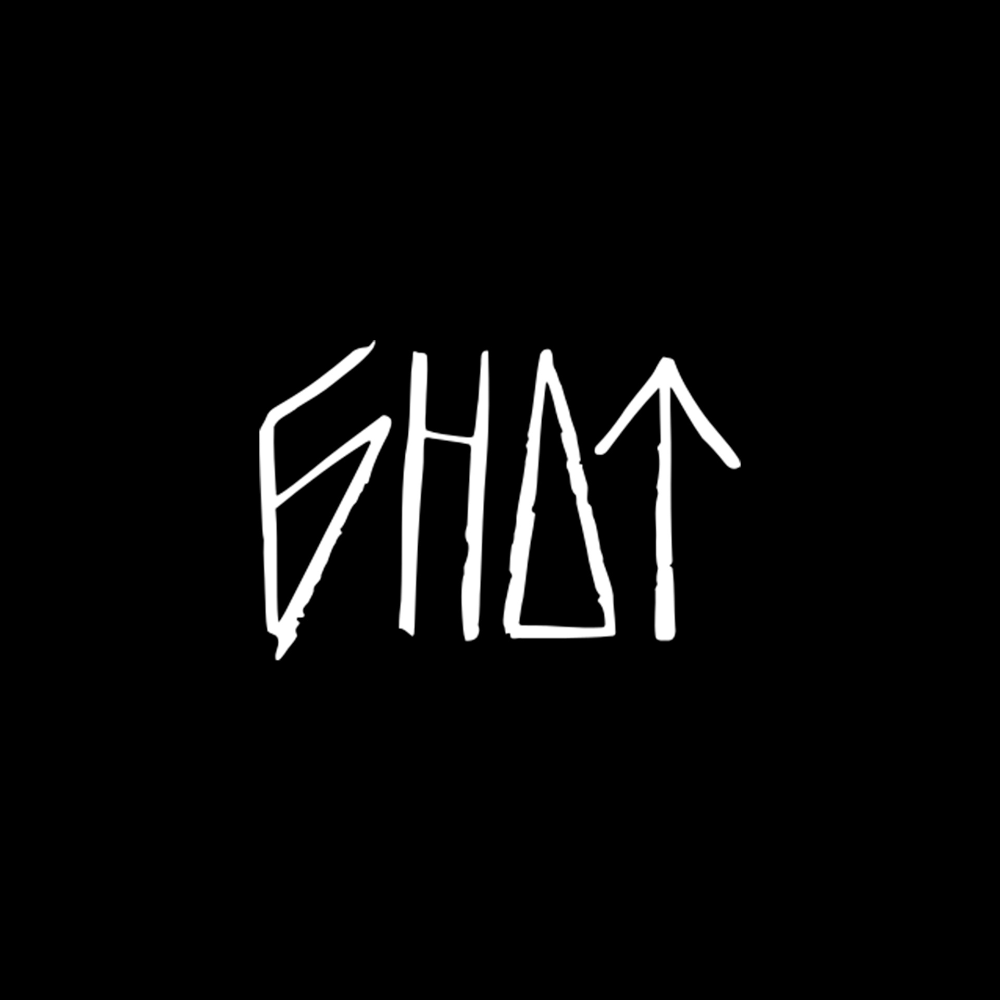

БНДТ - это бренд из Калининграда за которым стоит группировка райдеров снимающих большие BMX видео, и создающих вещи передавая через них свои мысли и идеи. БНДТ развивает и поддерживает не только BMX-сцену, но и локальных художников, музыкантов, fixed gear гонщиков. Настоящий Балтийский стиль. Название БНДТ (сокращённо «Бандиты») появилось благодаря цитате из кинофильма БРАТ: «Здорова бандиты!». Эту фразу при каждом выезде на стрит говорил один из участников группировки, как приветствие. С 2013 года и по сегодняшний день эта цитата стала традицией.
БНДТ - BMX без привязки к трендам. Делаем одноименную одежду передавая через неё свои мысли и идеи.
Локальный бренд одежды из Калининграда
В 2023 году БНДТ исполнилось 10 лет Спасибо всей группировке, всем друзьям и гостям за то, что этот день стал возможным!
